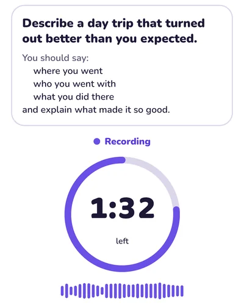
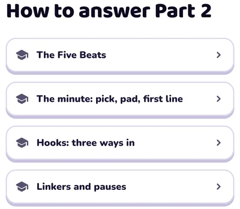
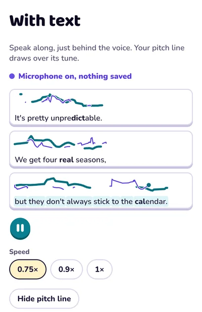
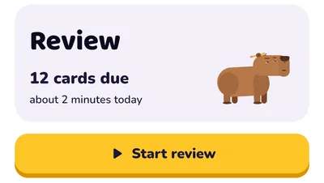
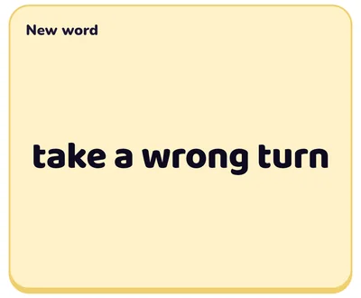
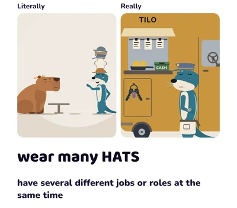
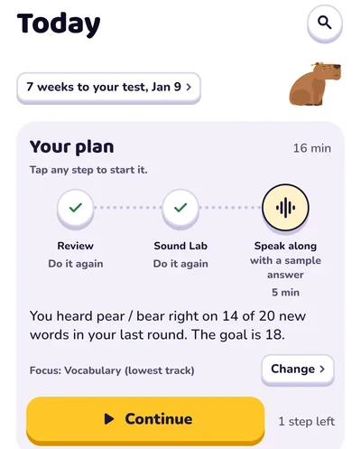
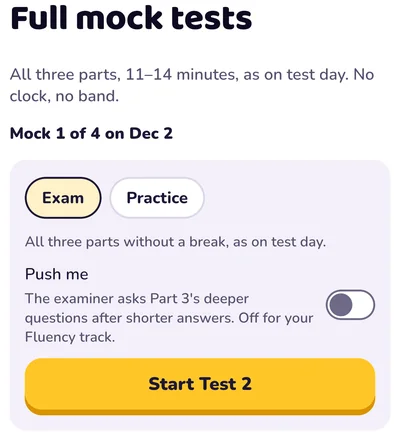

IELTS Speaking practice
Know what to say and how to say it
Practice every part of the IELTS Speaking test: 856 Part 1 and Part 3 questions and 100 Part 2 cue cards. Each has its own Band 9 sample answer. Hear it, then shadow it.
For iPhone, iPad and Mac with Apple silicon, and Android™ phones and tablets. Also available on the App Store for iPhone, iPad and Mac with Apple silicon. Also available on Google Play for Android phones and tablets. On a computer? Open this page on your phone to get the app.
- 856Part 1 and Part 3 questions
- 100Part 2 cue cards
- 1,351words, phrases and idioms in spaced review
- 40lessons, for every part of the test
- 12full mock tests, timed like the real one
Counted from the app's content. All questions and cue cards are YouSpeak's own, written in the style of the test. None is taken from an exam.
Hear what makes a Band 9 answer
Every practice question has its own Band 9 sample answer, and the app shows why it's a 9. Try two of them.
Part 1 Female voice
Hardly any, at least not with hotels and suitcases, so I've already traveled more as an adult than in my whole childhood. Our one big outing was a beach day every August, with homemade sandwiches and a cooler of lemonade, and it felt bigger than most trips I've taken since. My parents ran a small bakery, and they could never get away, since a bakery that closes for a week loses its regulars to the place across the street.
YouSpeak's own answer, written to match the public IELTS description of Band 9 speaking.
Why it's a 9
Part 1 Male voice
Something small and slow, with no itinerary and nothing famous I'm supposed to see. Last summer, two friends and I packed light and rented a lakeside cabin for four days, and the most ambitious thing we did was paddle a borrowed canoe to the far shore and back. I'd pick that over any big city, because after a whole semester of lab reports, a few days of doing nothing feels like the biggest luxury there is.
YouSpeak's own answer, written to match the public IELTS description of Band 9 speaking.
Why it's a 9
Practice for every part
356 Part 1 questions in 45 topics, 100 Part 2 cue cards and 500 Part 3 discussion questions, all written for YouSpeak. The test is the same for Academic and General Training.
-
Part 1 Short questions on familiar topics · 4–5 min
Where do you see the most ads during a normal day?
-
Part 2 A cue card: 1 min to plan, up to 2 min to talk
Describe a day trip that turned out better than you expected.
You should say:
- where you went
- who you went with
- what you did there
and explain what made it so good.
-
Part 3 Deeper questions linked to the Part 2 topic · 4–5 min
Is a day trip as good as a real vacation?
Talk for the whole two minutes
- Part 2 the exam way: 1 minute to plan on a keyword pad, then 2 minutes to speak.
- Again 4/3/2: three rounds on one card, each shorter than the last.
- Story Bank: 12 stories from your own life, kept as notes and bent to fit each card.
- 40 lessons for every part of the test, 8 of them for Part 2.
- The Mirror after every take: speech and silence, pauses, runs between pauses, your pitch line, and your speaking rate and pitch range beside the Band 9 voice's.


Shadow Band 9 answers
Speak along, line by line, and match its intonation.
- Any Band 9 sample answer in Parts 1 to 3 opens shadowing: speak with it, or just after it.
- Your pitch line is drawn live beside the Band 9 answer's, line by line.
- 38 shadowing scripts for rhythm, stress and tune.
- While you speak along, the microphone listens and nothing is saved. The last step, On your own, keeps your take.

Pronunciation practice: sheep or ship?
IELTS doesn't grade your accent. It grades whether you're easy to follow from start to finish. That's what we train.
Try the Sound Lab: 10 words
Which word did you hear?
Six voices, one word at a time. Headphones help.
- Sound Lab: train your ear on the sound pairs that matter for your first language, with six voices: 24 tricky pairs like this one.
- 24 animated explainers that show how each sound is made.
- Drills for chunking, focus, tone, word stress, rhythm and connected speech.
- Mirror mode: watch your lips with the front camera, with nothing recorded or saved.
Words come back before you forget
- Spaced repetition for 1,351 words, phrases and idioms: each one comes back on the day it's due, and you say it aloud.
- 1,074 topic words, collocations, phrasal verbs and expressions for IELTS Speaking topics.
- 37 speaking moves with 117 ways to say them.
- 23 grammar units, learned by ear, aloud and in your own answers.


What does wear many hats mean?
Have several different jobs or roles at the same time.
- 100 American idioms: 65 as short animated films and 35 as illustrated cards.
- Most show what the words look like literally. Each shows what it really means, and when it fits an IELTS answer and when it doesn't.

A daily plan to your test day
- Enter your test date and the plan counts down to it, about 15 to 25 minutes a day.
- 12 full mock tests in the test's format and timing, 11 to 14 minutes.
- A review that shows what happened in each part and turns it into next week's plan.
- Seven short games and the Daily, each training one thing the Speaking test grades, hosted by Tilo, an otter who never judges.
- Progress you can check: minutes spoken, days in a row, and your average run and pauses a minute beside your first take's.


Private by design
Your recordings stay on your device
So do your progress and your plan. Delete a take, or all of them, whenever you like.
No account, no ads and no tracking
On its own, the app sends only what purchases need: the subscription check to RevenueCat and, on Android, Google Play billing's own technical logs.
No AI in the app
Nothing turns your speech into text. Every measure is plain signal processing, made on your device.
Everything that leaves your device is listed in the Privacy Policy.
YouSpeak Pro
A subscription is required to use YouSpeak after a short setup and your first practice answers: 1, 3 or 12 months, renewing automatically until you cancel. The app shows each plan's price and terms before you subscribe.
- 1 monthRenews monthly
- 3 monthsRenews quarterly
- 12 monthsRenews yearly
- Every feature in every plan: the questions, the Band 9 answers, shadowing, pronunciation, vocabulary, idioms, mock tests and games.
- On Apple devices, one subscription works with the same Apple Account. On Android, with the same Google account.
- Cancel any time in your App Store or Google Play subscriptions. Your recordings and progress stay on your device.
Questions
Does YouSpeak give me a band score?
No. YouSpeak doesn't guess your band. It trains the four things the test grades: fluency and coherence, vocabulary, grammar and pronunciation. After each take it shows plain measures of your own speaking, such as your pauses and your runs between them, so you can see them change from one take to the next.
Where do the questions come from?
They are YouSpeak's own, written in the style of the test. None is taken from an exam. Each Band 9 answer is written to match the public IELTS description of Band 9 speaking.
Is it for Academic or General Training?
Both. The IELTS Speaking test is the same for Academic and General Training.
Which devices does it run on?
iPhone, iPad and Mac with Apple silicon, from the App Store, and Android phones and tablets, from Google Play. A purchase on one store doesn't carry over to the other.
Does it work offline?
Yes, once the audio has arrived: a download of about 1.2 GB from the App Store, or about 1 GB from Google Play, that you start in the app (Wi-Fi recommended). Subscribing needs the internet, as does the first start after each renewal date.
How do I cancel my subscription?
- iPhone and iPad: in Settings, under your name, then Subscriptions.
- Mac: in the App Store, under your name, then Subscriptions.
- Android: on your Subscriptions page in Google Play.
In the app, Settings › Access › Manage subscription takes you there. Your access lasts to the end of the period you paid for.
I subscribed, but the app doesn't show it
Tap Restore purchases on the subscription screen, or in Settings › Access, signed in with the same Apple Account or Google account you subscribed with. If that doesn't help, email us the Support ID shown there.
How do I move to a new phone?
Your recordings and progress live only on your device and aren't backed up, so a new phone starts fresh. Your subscription comes back with Restore purchases, using the same store account.
How do I delete my recordings?
In the app, go to Settings › Recordings and privacy (on the subscription screen, Recordings and privacy). You can delete recordings older than 30 days, 90 days or a year, delete all of them, or reset everything. One take at a time: Me › My recordings.
Support
Questions, problems or ideas: email principiaforge@gmail.com. In the app, Settings › About › Contact support writes the email for you, with your app version filled in.
To delete your recordings or everything, go to Settings › Recordings and privacy in the app. To cancel a subscription, use your store's Subscriptions page. More in the Terms of Use.
Walk in ready on test day
YouSpeak is available on the App Store for iPhone, iPad and Mac with Apple silicon, and on Google Play for Android phones and tablets.